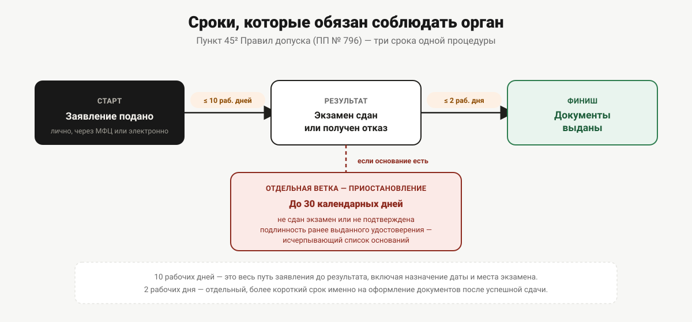

Запись на экзамен в Пермском крае
Заявление подают через Госуслуги, МФЦ или лично. Разбираем сроки, которые обязан соблюдать региональный орган, и почему место сдачи привязано к прописке или к учебной организации.
Обучение позади, документ о квалификации на руках — и дальше начинается вопрос, который федеральная норма регулирует довольно подробно, а вот региональная специфика Пермского края в открытых источниках на момент подготовки статьи не проверяется напрямую. Разбираем, что говорит норма про способы подачи заявления и сроки, которые орган гостехнадзора обязан соблюдать, — независимо от региона.
Три способа подать заявление
Правила допуска к управлению самоходными машинами (постановление Правительства РФ от 12.07.1999 № 796) не называют один-единственный способ обращения. Из текста Правил и из практики оказания государственных услуг в принципе складываются три канала:
- Электронно — через Единый портал государственных и муниципальных услуг (Госуслуги) и, при технической возможности, через региональный портал. Пункт 15² Правил допуска прямо предусматривает подачу заявления «в электронной форме с использованием Единого портала и (или) региональных порталов».
- Через многофункциональный центр (МФЦ). Пункт 45² устанавливает: «Государственная услуга может предоставляться в многофункциональных центрах предоставления государственных и муниципальных услуг». Формулировка — «может предоставляться», не «предоставляется всегда и везде»: значит, доступность конкретно этого канала в Пермском крае — вопрос регионального административного регламента, а не федеральной нормы. Прежде чем ехать в МФЦ именно за этой услугой, стоит уточнить на месте или на сайте МФЦ Пермского края, принимают ли там заявления по вашей ситуации.
- Лично, в органе гостехнадзора. Это способ по умолчанию — не требует электронной подписи и подходит для любой ситуации, включая случаи, где подача через портал технически недоступна.
Какое ведомство в Пермском крае принимает эти заявления и как выбирают конкретное место обращения — в статье «Куда в Перми обращаться за удостоверением тракториста».
Электронная подача: какая подпись нужна
Пункт 15² описывает требования к подписи заявления, поданного через портал: заявление подписывается либо простой электронной подписью, «ключ которой получен при личном приёме» в соответствии с постановлением Правительства РФ от 25.01.2013 № 33 «Об использовании простой электронной подписи при оказании государственных и муниципальных услуг», либо усиленной неквалифицированной электронной подписью, сертификат которой создан и используется в инфраструктуре, обеспечивающей взаимодействие информационных систем для оказания госуслуг.
На практике для большинства заявителей это означает: подойдёт та же подтверждённая учётная запись на Госуслугах, которой пользуются для любых других государственных услуг, — ключ простой электронной подписи для неё получают один раз, при первом личном обращении (в МФЦ или в самом ведомстве), а дальше пользуются им для всех последующих обращений через портал.
Что происходит после подачи
Норма обязывает орган гостехнадзора держать заявителя в курсе автоматически, а не только по запросу. Тот же пункт 15² указывает: «Орган гостехнадзора информирует заявителя о ходе оказания государственной услуги, а также о результатах оказания государственной услуги в автоматическом режиме посредством уведомлений в личном кабинете заявителя на Едином портале и (или) региональном портале в течение 1 рабочего дня». То есть при электронной подаче отслеживать статус заявления можно в личном кабинете, не дозваниваясь в ведомство.
Сроки, которые обязан соблюдать орган
Пункт 45² устанавливает три срока, из которых складывается вся процедура:
| Этап | Срок |
|---|---|
| Предоставление государственной услуги целиком (от регистрации заявления до результата) | не более 10 рабочих дней |
| Выдача (направление) документов после успешной сдачи экзаменов или после мотивированного отказа | не более 2 рабочих дней |
| Приостановление предоставления услуги (если основания есть) | не более 30 календарных дней |
Важно не путать первый срок со вторым: 10 рабочих дней — это весь путь заявления до результата (включая назначение даты, времени и места экзамена), а 2 рабочих дня — отдельный, более короткий срок именно на оформление и выдачу документов уже после того, как экзамены сданы.

Приостановление услуги: когда и почему
Тот же пункт 45² перечисляет основания для приостановления исчерпывающим списком — то есть орган гостехнадзора не вправе приостановить услугу по причине, которой нет в этом перечне:
- заявитель не представил ранее выданное удостоверение тракториста-машиниста (тракториста) или удостоверение другого вида на право управления самоходными машинами, если оно ранее выдавалось, либо возникло сомнение в его подлинности;
- неудовлетворительная сдача теоретического экзамена;
- неудовлетворительная сдача практического экзамена.
Из этого перечня видно, что приостановление — не наказание за формальную ошибку в заявлении, а прямое следствие хода самого экзамена: не сдали с первого раза — услуга приостанавливается на срок, достаточный для пересдачи в рамках правил о повторных попытках. Что именно происходит при несдаче того или иного экзамена и через сколько дней можно пересдавать — в статье «Экзамен в гостехнадзоре: как он устроен».
Назначение места, даты и времени
После рассмотрения документов и при отсутствии оснований для отказа кандидату назначают место, дату и время сдачи экзаменов — это отдельное действие органа гостехнадзора, не то, что выбирает сам заявитель произвольно. Основание для выбора именно этого места — принцип из пункта 12 Правил допуска (по месту жительства или по месту нахождения учебной организации), подробно разобранный в статье про полномочия регионального ведомства.
Получение результата
После успешной сдачи экзаменов у заявителя, подававшего документы через портал, появляется возможность записаться на приём в орган гостехнадзора для получения удостоверения на бумажном носителе — эта возможность обеспечивается на Едином портале и (или) региональных порталах. Помимо бумажного варианта, по желанию заявителя дополнительно может быть оформлено удостоверение в виде электронного документа: оно подписывается усиленной квалифицированной электронной подписью государственного инженера-инспектора и направляется в личный кабинет заявителя — при условии, что у самого органа гостехнадзора и у порталов есть техническая возможность для такого оформления.
Полный список документов, которые нужны для подачи на экзамен, — в статье «Документы для получения прав тракториста». Сколько в целом длится обучение до этого момента — в статье «Сколько длится обучение на тракториста».
Что уточнить именно в Пермском крае
Три момента федеральная норма оставляет на усмотрение региона, и по каждому из них перед подачей заявления стоит свериться с официальными источниками, а не с этой статьёй:
- доступна ли подача через МФЦ конкретно для этой услуги в вашем городе или округе;
- есть ли у Пермского края отдельный региональный портал государственных услуг, через который тоже можно подать заявление, помимо федерального Единого портала;
- какой конкретно государственный орган в крае значится получателем услуги при электронной подаче — это должно быть видно уже на этапе выбора услуги на портале.
Официальный сайт инспекции гостехнадзора Пермского края и Госуслуги были недоступны из среды подготовки этой статьи, поэтому такие детали в тексте сознательно не приведены: лучше свериться напрямую перед подачей заявления, чем ориентироваться на данные, которые могли устареть или оказаться неточными уже на момент публикации.